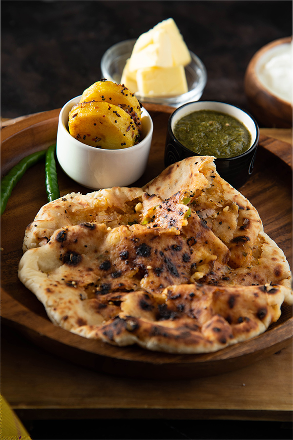

Chur Chur Naan is a type of Indian flatbread that is made with a combination of wheat flour, yeast, and yogurt. The dough is rolled into small rounds and then pinched and pulled to create a layered texture. The bread is then cooked in a tandoor oven or on a griddle to achieve a soft and chewy texture with crispy edges. The unique texture of Chur Chur Naan sets it apart from other types of Indian bread. The layers of dough allow for pockets of air to form, creating a soft and pillowy texture that is perfect for sopping up rich and flavorful sauces.
Meal prep time : 1 hour 7 minutes
Servings : 2